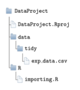
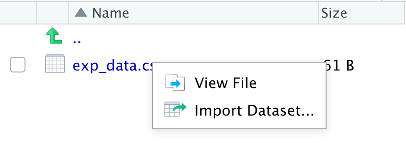

Show R code
library(here)
library(data.table)
library(dplyr)Claudius Gräbner-Radkowitsch
16 05 2025
Packages used in this tutorial:
Functions that are used to import data take as an argument a path to a file containing data, parse this file, and return an R object (usually a kind of data.frame) that contains the data from the file.
In general, there are different file formats for storing data, but the most widely used one is the .csv-format - an abbreviation for ‘comma separated values’, indicating that (usually) data points are separated from each other via commas. The big advantage of such files is that they are platform-independent and do not require any external software. Their downside is that you they are relatively large for a given amount of data, and that they are inferior to more modern file formats when it comes to reading and writing speed. But these disadvantages become relevant only for larger data sets, which is why csv files are a good default option to use, and this tutorial focuses on reading and writing csv-files (with a short overview over most common alternatives below).
While writing (or ‘exporting’) data is usually straightforward, reading (or ‘importing’) data can be very frustrating and complicated. The reason is that there are many different ways of how exactly data is stored within a csv-file. But don’t worry: first, the package data.table provides for the amazing function data.table::fread() that allows you to account for basically every specifity of the csv-files you will encounter. Second, with only a handful of arguments passed to data.table::fread() you can already cover the vast majority of practically relevant cases.
The main focus of this tutorial, thus, is to introduce you to the most important arguments of data.table::fread(). After this, we also make a few remarks on how to save data and how to import/export data using different file formats. Note that while the arguments of data.table::fread() that will be covered are the most important ones that allow you to deal with most practically relevant cases, the function allows for an even greater level of customization. You can find more information via help(fread), but it will be much easier to understand the function manual after going through the base cases described below.
A final remark: if you read about data import in, e.g., textbooks that usually rely on the tidyverse packages, you will not find any mentioning of data.table::fread(). Rather, the functions provided by the package readr will be used. This is one of the very few exceptions where I recommend you to break the rule of writing code in a consistent dialect: while the readr-functions would be more consistent with our commitment to the tidyverse, the function data.table::fread() is just too much better than these alternatives to be ignored: not only is it much, much faster, it also allows for more customization. The only ‘drawback’ is that after reading in data it returns this data as a data.table (or a data.frame, see below). But this is only a small cost compared to the many benefits. We just should not forget to transform the object returned by data.table::fread() into a tibble.
In the following we assume that our R project is set up correctly, as described in the corresponding tutorial, and that the data set we would like to import is called exp_data.csv and stored in the subdirectory data/tidy/exp_data.csv:

In the following we assume we work in the file importing.R, the first lines of which should contain
If the data file is not too large it is a good idea to inspect the raw file using the R-Studio file preview (for larger files it is usually better to open the file using a text editor, such as Emacs or TextEdit):

This way you get almost all relevant information about how the file looks like and what kind of arguments you must use when calling data.table::fread(). In the present example case, the file looks like this:
iso2c,year,exports
AT,2012,53.97
AT,2013,53.44
AT,2014,53.38This is a very standard csv-file: we see that there are three columns, all of them separated with a comma. Moreover, the third row contains decimal numbers where the decimal sign is a dot. This is the standard case, and it aligns well with all the default values for the optional arguments of data.table::fread(). Thus, we only need to specify the single mandatory argument of this function. It is called file1 and should be the relative path to the file. In our case:
# A tibble: 3 × 3
iso2c year exports
<chr> <int> <dbl>
1 AT 2012 54.0
2 AT 2013 53.4
3 AT 2014 53.4As we can see the default options of data.table::fread() did an excellent job and we now have an R object that we could use immediately for further analysis (e.g., to build visualizations as described in one of the previous tutorials). In many cases, however, we need to use some of the optional arguments of data.table::fread() to get the desired result. In the following, we will go through the most commonly used arguments. These are:
sep: symbol that separates columnsdec: symbol used as decimal signcolClasses: set the object type of the columnsselect and drop: specify columns that should (not) be readnrows and skip: specify how many rows should be read /skipped from the top of the fileheader: specify whether there is a header with variable namessep and the decimal sign using decWhile the example file above represents the widespread standard case in which columns are separated by a comma and the dot is used as the decimal sign, many files use other symbols. In Germany, for instance, it is very common to use ; as a separator for columns, and , as a decimal sign instead. Thus, the ‘German version’ of our example from above would look like this:
iso2c;year;Exporte
AT;2012;53,97
AT;2013;53,44
AT;2014;53,38Sometimes, data.table::fread() detects such cases automatically and adjusts the values for the optional arguments implicitly. But it is always better to explicit and to specify decimal signs and column separators explicitly! This also increases the reading speed of data.table::fread(). To set them explicitly, we use the arguments sep and dec as follows:
After completing the function call we should always inspect the imported object to make sure everything went well. We might have a look at the first lines:
# A tibble: 2 × 3
iso2c year exports
<chr> <int> <dbl>
1 AT 2012 54.0
2 AT 2013 53.4Or use dplyr::glimpse() or str():
colClassesUsually, the automatic type recognition of data.table::fread() works quite well. This means that R chooses the right data type for each column automatically. Sometimes, however, this detection fails and you need to specify the column types manually. But even if the automatic recognition works, there are some good reasons for playing save and specify the column types yourself:
double, data.table::fread() would simply interpret it silently as a character and you would later wonder later why you cannot calculate an average for the column;One situation where specifying column types yourself is extremely important is when a column contains numerical codes that might contain a leading zero, e.g. when the data contain HS product codes, such as here:
commoditycode,complexity
0101,0.06
0102,-0.49
0103,0.51
0104,-1.12
0105,-0.17Assuming the file is called exp_data_hs.csv and also is stored in data/tidy/, we might try to import it using the default argument values:
# A tibble: 5 × 2
commoditycode complexity
<int> <dbl>
1 101 0.06
2 102 -0.49
3 103 0.51
4 104 -1.12
5 105 -0.17As you can see, data.table::fread() interpreted the column commoditycode as double. But since numbers do not have leading zeros, these are removed silently, meaning that R does not issue a warning message. This is dangerous and might come with serious misinterpretations later on. To avoid this, you must choose the column types yourself via the colClasses argument, by simply specifying a vector with the data types:
# A tibble: 5 × 2
commoditycode complexity
<chr> <dbl>
1 0101 0.06
2 0102 -0.49
3 0103 0.51
4 0104 -1.12
5 0105 -0.17As you can see, encoding the column commoditycode as character preserves the leading zeros and the correct product codes.
For data sets with many columns it is often tedious to specify column types one by one. Here it might be useful to use the function rep(): it saves space if, for instance, 6 subsequent columns are all of type double. In this case you may just write rep("double" , 6).
nrows and skipKeep in mind that you can increase the reading speed of data.table::fread() considerably by manually specifying the columns types. At the same time, opening very large data files in R Studio or even a text editor can slow down your computer considerably.
Thus, it is advisable to read in the first 3-5 rows, inspect them, and then read in the whole data set with the right specification for colClasses.
You can load only the first \(n\) rows by using the argument nrows:
# A tibble: 1 × 3
iso2c year exports
<chr> <int> <dbl>
1 AT 2012 54.0In other instances, you might also want to skip the first \(n\) rows. This is often the case if your file contains some general introductory header, which is placed before the actual data set. Such data with a header might look like this:
This is awesome data from 2012-2014
It was compiled be Claudius
He also added this useless header
iso2c,year,Exporte
AT,2012,53.97
AT,2013,53.44
AT,2014,53.38
In this case, you definitely want to ignore the first three rows when importing the data set. Otherwise you will get hodgepodge:
# A tibble: 1 × 6
V1 It was compiled be Claudius
<chr> <chr> <chr> <chr> <chr> <chr>
1 He also added this useless header To ignore the first three rows just set skip to 3:
# A tibble: 3 × 3
iso2c year Exporte
<chr> <int> <dbl>
1 AT 2012 54.0
2 AT 2013 53.4
3 AT 2014 53.4Again, the automatic detection of fread() often works quite well when it comes to the identification of useless headers, but better be prepared to use skip whenever necessary.
select and dropSometimes you only want to read in a certain selection of columns. This can also save a lot of time when working with large data sets. In the following example we only want to import the columns year and exports:
# A tibble: 2 × 2
year exports
<int> <dbl>
1 2012 54.0
2 2013 53.4If you want to manually specify column types, you can do so without using colClasses by passing a named vector to select:
# A tibble: 2 × 2
year exports
<dbl> <dbl>
1 2012 54.0
2 2013 53.4Alternatively, we can also specify columns to be ignored via drop:
# A tibble: 2 × 2
year exports
<int> <dbl>
1 2012 54.0
2 2013 53.4Even though csv-files are the most widely used data, there are of course many other formats you will encounter. Here I would like to give examples of three other formats (.rds, .rdata and .dta).
First, R has two ‘in-house’ formats that while being extremely well suited for storing larger data, can only be opened via R. These files have the ending .rds/.Rds, .RData, or .Rda (where .Rda is just an abbreviation for .RData).
Generally, .Rds store individual R-objects, such as single atomic vectors, lists, or data.frames. Such files can be read with the function readRDS(), which takes a single argument - the name of the .Rds-file - and returns the object stored in the file:
By contrast, .RData-files can contain more than one objects. Moreover, the corresponding import function load() does not return an object to which you can assign a name. Instead, the objects retain the name with which they were originally saved and are available immediately after calling load(): In the following example, import two objects called test_dat and test_vec:
The use of .RData is particularly useful whenever you want to store several objects and if some of these objects are not data sets, for which other formats would be readily available.
A format often used in economics is the native format of the commercial software STATA. These file end with .dta. To read files in this format you may use the function read_dta() from the package haven, which accepts the filename via the argument file:
The package haven actually provides a number of other functions that allow you to read (and write) in a number of data formats used by commercial software packages such as SAS or SPSS.
Compared to reading in data, saving it is much easier, because the data is already in a reasonable format. So the only real question is: in which file format should you save your data?
In the vast majority of cases, this question can comfortably be answered with csv. This format is easy to read and fully platform compatible. It also does not have the worst properties in terms of reading and writing speed, especially if you compress the data later on.
The fastest and, in my opinion, by far the best function for writing csv.files is the function fwrite() from the package data.table - think of it as the sister to data.table::fread().
To illustrate how to use it, suppose we have a data set test_data that we want to store in the directory subfolder data/tidy as test_data.csv. This is easily done with data.table::fwrite():
In addition to the object to be written as the first argument (x), you also need to specify the argument file, which determines the name and path of the file to be written. data.table::fwrite() accepts some more optional arguments, but in most cases you will not need them. If you are interested, just have a look at the help function!
The R-specific formats .Rdata and .Rds have speed and compression advantages over the csv format, and remain fully platform-compatible. Their biggest drawback, however, is that they can only be used by other R-users. Thus, before using them you should make sure that all potential users of your data also use R. In this case you can save a single object in an .Rds-file by using the function saveRDS() with the arguments object and file:
In addition, you may use the optional argument compress to select the compression type: gz is the fastest, bz the strongest, and xz represents the middle ground.
If you want to save several objects at once you can do this using the format .RData. The corresponding function is save(). Although you can simply pass all the objects you want to save as the first arguments to the function, it is more transparent to do this via the list argument. The following code stores the two objects test_data and data in the file "data/tidy/datacollection.Rdata":
Like saveRDS(), save() allows you to select the compression algorithm via the compress argument. Moreover, you may control the compression level via the optional argument compression_level. Possible values range from 1 (fast, but little compression) to 9 (slow, but strong compression).
The final format considered is the STATA-specific format .dta. To store data in this format you may use the function write_dta() from the package haven:
For SAS and SPSS formats similar functions are also provided by the haven package.
Note: Especially with large data sets, the read and write speed of functions is very important. The question of the best file format becomes much more relevant in these cases, if compared with the cases of small data sets, where the question of format mainly revolves around the issue of ‘compatibility’. Some nice articles comparing different functions and formats with regard to their speed can be found, e.g., here or
here.
You can also specify alternative arguments, such as cmd when you want to parse the input file using a command line command. But we will not cover such more advanced cases here.↩︎